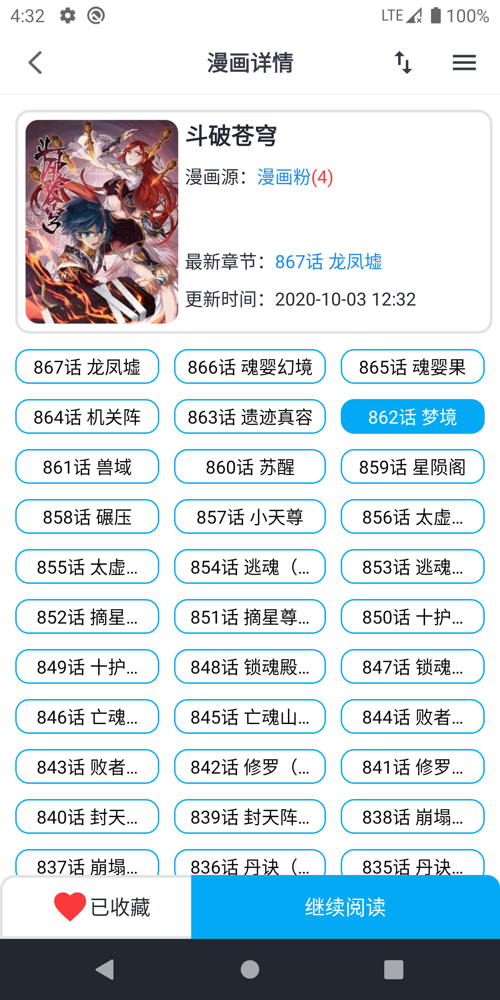

MyComic 全能力域盘点：从多源聚合到自定义扩展的深度梳理
把 MyComic 这个开源 Android 漫画/小说/番剧阅读器的能力面完整铺开，从架构设计、阅读体验、数据源扩展到番剧播放的特殊挑战，系统梳理它能解决什么问题、亮点在哪、哪些人该用。
开源 Android 平台上做「多源聚合阅读器」的项目不少，但能把漫画、小说、番剧三种内容形态放进同一套架构里、还能让有编程能力的用户自己扩展数据源的，MyComic 算是比较有代表性的一个，它的官网上有完整的项目介绍。开发者陆启创把项目的源码在 Gitee 和 GitHub 上完整开放，用腾讯 QMUI_Android 框架打底，TheBaseAndroid 封装常见能力，整个项目按 app/base/common 三层模块化得很清楚。本文尝试把它的能力面完整铺开，从架构到体验、从内置源到自定义扩展，一次说透它能解决什么问题、亮点在哪、短板又是什么。
架构设计：为扩展性而生的三层模块
MyComic 的代码组织是理解它全部能力的入口。整个项目用 Gradle 构建、Android Studio 开发，不想自己编译的话安装包从官方下载拿，核心拆成三个模块。app 模块是应用主入口，Activity、Fragment、界面交互逻辑全在这里；base 模块是基础组件层，放通用基类和工具方法；真正的业务核心集中在 common 模块——漫画源、小说源、番剧源的父类定义、枚举注册、测试基类都在这里。
这种分层的好处是 UI 层和数据源层完全解耦。开发者不需要在 Activity 里写任何具体源的解析逻辑，只需要面向父类接口编程。common 模块里最重要的三个类是 BaseComicSource、BaseNovelSource 和 BaseVideoSource，分别对应三种内容形态的数据源。每个源的实现只需要继承对应的父类、实现基类要求的方法组——搜索方法、详情方法、阅读方法，以及源名称、搜索提示词、分类列表这些辅助信息。
注册机制也很简洁。CSourceEnum 这个枚举类是所有漫画源的注册表，MyComic 启动时扫描这个枚举就知道要加载哪些源。新增一个漫画源的流程是：在 source 目录下新建类继承 BaseComicSource → 在枚举里加一条 → 解开测试基类的注释跑一遍验证 → 提交 Pull Request。开发者自己也提供了 BaoZi（包子漫画）等完整实现作为参考，新源的 HTTP 请求地址、页面解析逻辑、字段清洗规则各自不同，但整体骨架保持一致。
漫画与小说阅读：多源切换的体验细节
阅读体验是 MyComic 最直观的能力域。以漫画详情页为例，从画架卡片或搜索列表点进去之后，页面结构分得很清楚：顶部是漫画信息卡片，显示封面、标题、当前源名称（可以点击切换）、最新章节和更新时间；中间是按顺序排列的章节网格，每个格子显示章节编号和标题，点任一格子直接开始阅读；底部有收藏和继续阅读两个按钮——继续阅读特别适合追更场景，跳过中间直接回到上次中断的位置。
章节列表默认从旧到新排列，长连载漫画可能有几百甚至上千章节，需要上下滑动查看。这里有一个值得注意的细节：不同漫画源的章节编号和划分方式可能不同，在详情页切换源之后，章节列表会重新从新源拉取，某些源可能漏更某些章节或者章节命名不同，切换时要有心理预期。
小说阅读的基本流程与漫画类似，只是解析对象从图片变成了文本。两者共用同一套画架体系，收藏后都会进入画架 tab。画架本身支持多 tab 管理，收藏漫画、收藏小说可以分开浏览。

番剧播放：三种内容形态里最复杂的一环
漫画是图片、小说是文本，番剧在技术复杂度上明显高出一截。MyComic 内置的番剧源包括樱花动漫、哔哩哔哩、风车动漫、爱云影视等，但其中樱花动漫、米粒、风车动漫原版等多个源目前已经失效。失效原因通常是目标站更换域名、视频加密方式变更或反爬升级，调试难度比图文源高得多。
视频源需要处理 M3U8 等视频流地址，平台反爬策略也比图文平台激进。目前活跃的番剧源里，哔哩哔哩接入的是 B 站正版动漫资源，画质好、更新及时，但部分地区可能需要登录验证；风车动漫 2 是风车的备用域名源；爱云影视是综合影视源，包含部分动漫内容。
有编程能力的用户可以参考自定义漫画源的开发思路来写自己的番剧源——区别只在于继承的父类是 BaseVideoSource 而不是 BaseComicSource，解析对象变成视频流。开发者在 README 里也提到，一旦现有源失效，等待后续 release 修复是最稳妥的方案。
数据源扩展：让有能力的用户自己动手
开源项目最有价值的部分之一就是让社区贡献数据源，MyComic 在这一点上的设计相当友好。common 模块内置了源测试基础设施，BaseSourceTest 是测试基类，具体漫画源的测试继承它。解开注释就能运行搜索、详情、阅读三个阶段的验证，新源写好之后不需要跑完整的 App 就能先在测试层过一遍。
开发者自己也把这个扩展能力用得很充分——漫画源、小说源、番剧源三套父类接口几乎完全平行，只是解析对象不同。想要写一个新的漫画源，看 BaoZi.java 的实现就够了，结构和方法签名保持一致，填进自己的 HTTP 请求地址和页面解析逻辑即可。更完整的开发步骤可以去MyComic文档翻一下。
短板也要说
MyComic 有几个值得提前说明的局限。第一，它只支持 Android 平台，iOS 用户用不了，PC 端也没有对应的客户端或 Web 版本。第二，数据源的稳定性始终是这类阅读器的核心问题——番剧源的失效速度尤其快，依赖开发者持续跟进目标站的域名变更和加密方式升级。第三，部分漫画源和番剧源可能包含灰色资源，使用时需要注意版权边界。第四，画架的数据默认存在本地，没有云同步功能，换设备需要重新收藏。
什么样的人该用它
如果你是 Android 平台上的漫画重度读者，MyComic 的多源聚合、章节网格浏览、继续阅读这些功能会很对胃口——尤其是追更场景，继续阅读按钮比手动找章节方便得多。如果你同时看漫画和小说，它把两种内容形态放进同一套架构里的设计能省掉装两个阅读器的麻烦。
如果你有编程能力，MyComic 的价值会再大一层。common 模块的三源父类接口、测试基类、参考实现都齐全，写一个自定义数据源的门槛不高。开发者在 Gitee 和 GitHub 都维护了仓库，社区贡献的路径也比较清晰。
如果你主要在 iOS 或 PC 上看内容，那 MyComic 可能不在你的设备生态里。但如果你用 Android、有 Android Studio、又对多源聚合这件事感兴趣，它是一个值得认真对待的项目。
这套资料在Gitee上是主仓库，国内访问最顺畅，GitHub有社区 mirror，GitCode也同步了一份便于多网环境的用户获取。三个仓库保持一致更新，开发者也欢迎社区贡献新的漫画源和番剧源。